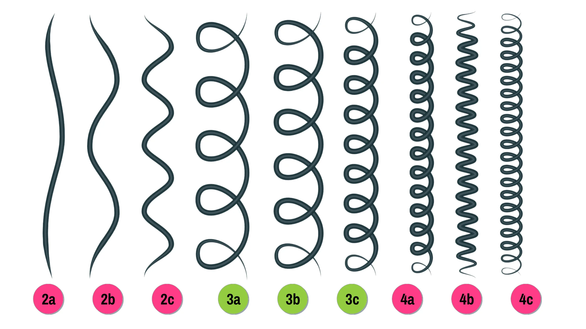

Para comenzar, se le muestra una imagen que ayudará a conocer su rizo, es primordial entender su tipo de onda, para proseguir a entender cómo se trata
Técnicas de definición
Técnica Rizo a Rizo
Esta técnica consiste en hacer el rizo uno a uno, con el pelo mojado casi goteando divida en secciones, al ser rizo a rizo será más tedioso por lo que las secciones deberán ser un poco pequeñas, coloque producto en crema o gel a unos centímetros de la raíz ponga su dedo índice y enrolle el mechón, puede hacer esto mismo pero tomando de referencia la mitad del mechón o hacer bucles llevando dos dedos desde el final y enrollando hacia arriba para luego soltar uno de los dedos y soltar de a poco el rizo, para finalizar haga mucho scrunch, si es de su agrado aplique gel para rizos para sellar la definición
Técnica de Bowl
Esta técnica es para mejorar la hidratación en el cabello y controlar el frizz, para ello después de lavar su cabello toma un bowl y agregale agua fría aplique, el acondicionador y cepille con la cabeza hacia adelante, tome el bowl con agua fría y sumerja el cabello, posteriormente sáquelo con cuidado y aprete los rizos en forma de scrunch, repita el proceso en todo el cabello y termine hasta que sienta su cabello hidratado y sus rizos bien formados, puede secar al aire libre o con difusor, dependerá de sus necesidades y posibilidades.
Técnica de cepillo
Hay múltiples formas de definir el cabello con cepillos, existen todo tipo de cepillos para ello, pero se le exteranará hacerlo con una forma más sencilla, para empezar con el cabello bien mojado aplique su crema o gel y con su cepillo para rizos, divida en secciones y pase el cepillo de arriba para abajo y cuando finalice el mechón haga scrunch varias veces, el cepillo dependerá del resultado que desee, hay cepillos de con cerdas más separads o más juntas, esto será decisión plenamente suya con lo que mejor se acomode a sus necesidades y comodidad.
Conclusión
Hay cientos de formas más, se le ectermaron las más sencillas a consideración, todas estas técnicas pueden acomodarse a su estilo de vida y dependerán de sus necesidades y posibilidades como el tiempo, no existe un patrón a seguir pero se le facilitan los pasos básicos, puede añadir pasos o reducirlos, lo mismo con sus productos, utilice los que se acomoden principalmente a su necesidad capilar, a continuación se le hablará de los diferentes tipos de cremas recomendadas para su tipo de onda.
Productos a usar
Cremas para Rizos
Para cabello rizado tipo 2a a 3c se le recomienda usar cremas más ligeras como las que se presentan a continuación (estas pueden conseguirse principlamente en supermercados) se pretende recomendar cremas de fácil acceso y buenos resultados.


Crema para Afro
Para cabello rizado tipo 4a a 4c se recomienda usar cremas más espesas para una definición más resistente, a continuación se le presentan cremas que puede conseguir a nivel de supermercado que le darán buenos resultados y son de fácil acceso.


Cuidados
Hay miles de cuidados para un cabello rizado, se le presentan cuidados simples y eficientes para comenzar a cuidar su cabello rizado y conservar este de la mejor manera posible.
- Use shampoos sin sulfatos.
- Cepille el cabello solo cuando está mojado.
- Cuando aplique la crema u cualquier otro producto procure que el pelo esté bastante mojado.
- Lave el cabello según su tipo de cabello, ya sea seco, graso o mixto.
- Para secar excesos de agua o hacer scrunch en el cabello hágalo con toallas de microfibra, para evitar frizz.
Quiénes somos
Fuerza Rizadas es una página que incentiva el cuidado capilar del cabello rizado sin someterlo a alisantes u procesos químicos que conlleven el uso excesivo de calor, debido a que esto puede dañar el cabello y quemarlo a gran escala.
Durante mucho tiempo se ha inculcado lo fácil que es estilizar un cabello liso, sin embargo, poco se habla de cómo estilizar el cabello rizado, razón por la cuál personas que saben poco al respecto tachan el cabello rizado de feo sin forma o informal, sin saber que hay formas de tratarle, muchas personas incluso optan por elegir procesos químicos antes que entender su cabello, para Fuerza Rizadas es una necesidad incentivar el conocimiento del cabello rizo, evitando conceptos como que este sea feo, díficil de tratar, malo o informal, se apoya la aceptación de este sin querer imponerla, pero sí entender el cabello, cuidarlo y colaborar a que esté sano.